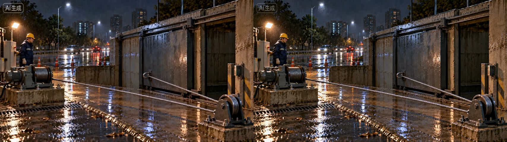

《失帧》MC00 · 城市长镜头重做
16秒 · 480p · 原速原声 · 模型原文件（首帧由 Codex 生图）
一、MC00 接市政原片（连续审看）
MC00 去掉与市政第0帧重复的最后一帧后直接接原市政片；市政画面与声音未改，仅为审看统一到480p。接点在16秒处。
二、MC00 单独原片
逐镜检查：湿墙滑出后主路与城市展开、住宅楼梯窗与玻璃站棚依次经过、最后落到工人与设备，这几项成立；未通过的是摄影机末段没有真正停稳（仍在缓慢上移），接到固定机位的市政片时会有轻微“骤停”，另外10–12秒穿过站棚前檐时偏快。声音和完整观感以你原速观看为准。
首帧与接点对照


上：实际首帧。下：左 MC00 末帧，右 市政原片第0帧。